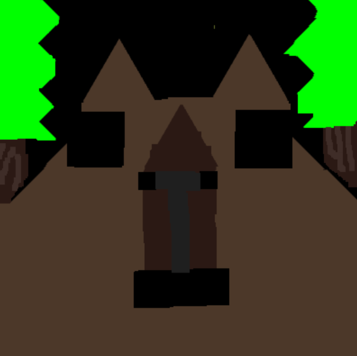
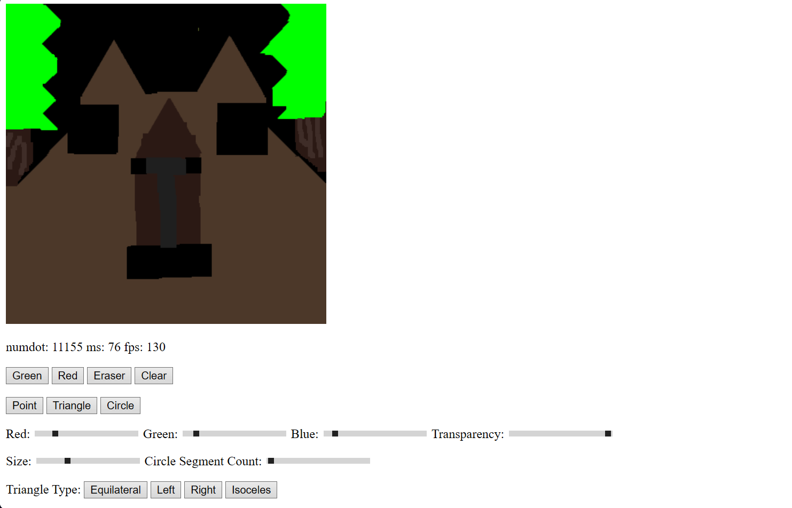
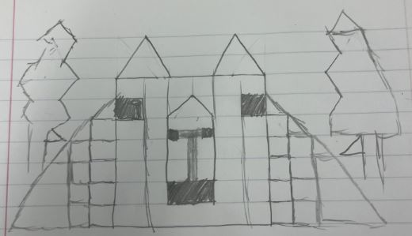

Performance Stats
Red: Green: Blue: Transparency: Size: Circle Segment Count: Triangle Type: I added the feature of buttons for different types of triangles, transparency slider, and an eraser button. I drew a Capybara in a forest with my program!   